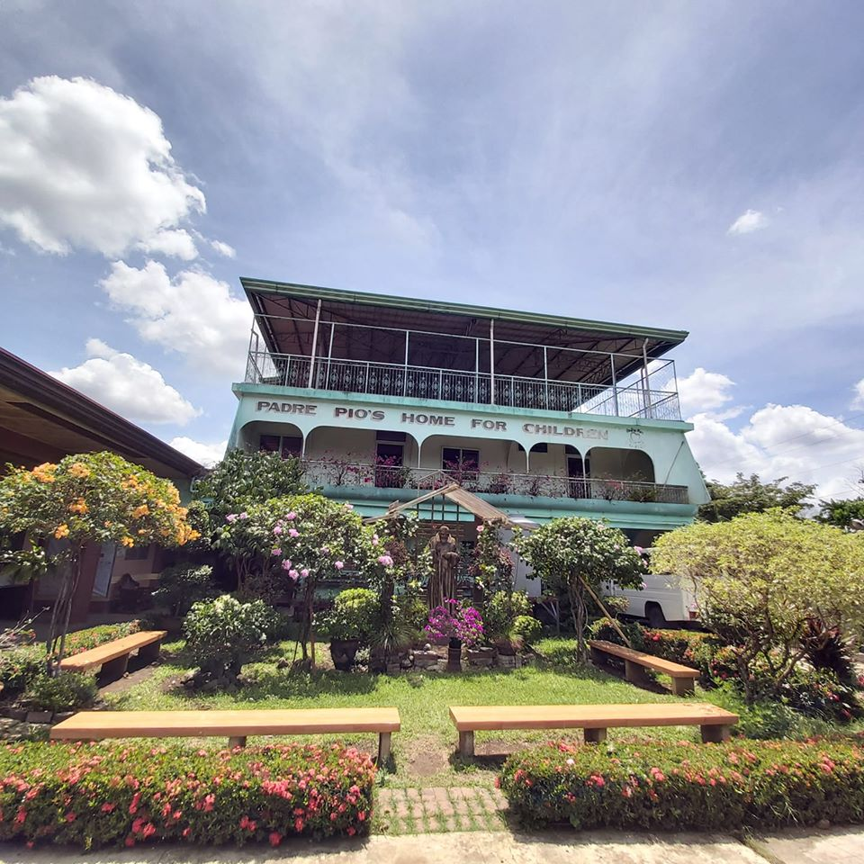

THIS ARE THE PROGRAM OF OUR INSTITUTION

Case Management– the process of helping the child uplift his/her life using PPHC
internal and external resources. Services include 1. Intake and Assessment 2. Formulation
of treatment plan 3. Implementation of treatment plans 4. Evaluation 5. Follow-up and aftercare
6. Case recording 7. SCSR Preparation 8. Conduct of regular case conference
Psychosocial Intervention – a therapeutic intervention that uses cognitive,
cognitive-behavioral, behavioral and supportive interventions to relieve pain. Services include 1.
Counseling individual/group 2. Case conference 3. Family Dialogue/conference 4. Home visits.
Medical Services – provisions of preventive, curative, and rehabilitative medical services to all children and staff. Services include 1.
Medical examination 2. Dental check-up and tooth extraction 3. Hospitalization (when needed).
Home Life/Group Living Services – provision of substitute parental care and stimulating development activities that facilitate motor development
hygiene and grooming, social skills, and productivity. Services include 1. Provision of all the basic needs of the residents. 2. Teaching household
chores and develop in the positive work habits and values, inculcate the sharing of responsibility for group living. 3. Monitor and supervise the daily
activities of the children.
Educational Services – provision of formal education to all residents; grade school, elementary, secondary, and senior high education. College degrees
or vocational courses are provided to children who meet prescribes academic rating on their senior high education and shows pleasant behavior in home and
school. Services include 1. Full payment of school fees/miscellaneous 2. Provision of school supplies, uniform etc. 3. Snacks allowance 4. Transportation/fare
allowance 5. On job training expenses for college students 6. Tutorial sessions 7. Educational tours
Spiritual Enhancement/Religious Services
– provision of various spiritual/religious teaching in accordance with the Roman Catholic faith to enhance
the spirituality, moral values, and emotional intelligence of each resident. Services include: 1. Attendance to daily Holy mass 2. Recollection/Retreats 3.
Daily Holy Rosary 4. Monthly confession 5. Catechism and Bible Study 6. Attendance to Legion of Mary and community Apostolate services 7. Values Formation 8.
Non- Catholics are given the freedom to practice their religion's beliefs.
Productivity/Skills and Capability Development Training
– to ensure the sustainability of services to its clientele served. The institution provides various
life skills training and seminars in order for residents to acquire the technical and intellectual capacity to prepare them to live independently. Trainings
include 1. Musical enhancement 2. Sports development 3. Arts and crafts 4. Cooking 5. Basic Sewing 6. Computer Skills training
Socio-Cultural and Recreational Activities
– access to indoor and outdoor activities to help the children temporarily release their emotional/psychological stress as well to enhance their socialization skills. Activities include 1. Birthday celebration 2. Party (Christmas and New year’s Eve) 3.Film Viewing 4. Special treats 5. Field Trips/ Exposures.
The community is all about taking good care of their beloved children that they have helped and support. This community is focusing on helping those children that are abandoned by their family.
The usual concerns/problems that this type of community might have are their donations/the things that the organization/institution needed, especially during the pandemic that they should have a lot of food supplies for their daily needs.
The commonalities and differences of this community to our/my community is that, first the difference/s between my community and this community is that we have a lot of supplies/things that the people needed the most right now. While this community needs a lot of supplies for their children and for the people that work in that community. Now the commonalities of our community and this community is that
The important information that I needed to know about this community is that if this community is excellent, and is its location good enough for the children and them? Do they need anything? Does this institution have many people who donate something for the children and for the people who worked there?
As an Atenean, it is essential to raise awareness in this type of community, because at this time right now. A lot of people, organizations and, etc. are struggling to survive. This community should be focused right now, and the only thing to help them is to make a website/webpage about our partner institution. Wherein we will post this in social media since a lot of people right now are using social media for them to work, school, etc. Soon, if we could raise awareness in this type of community, then a lot of people could be informed about this, and they could help us support the needs of this community. Since the Ateneans, care for others, and we would always find a way to make others happy and safe. We want what’s best for others, not just for ourselves.